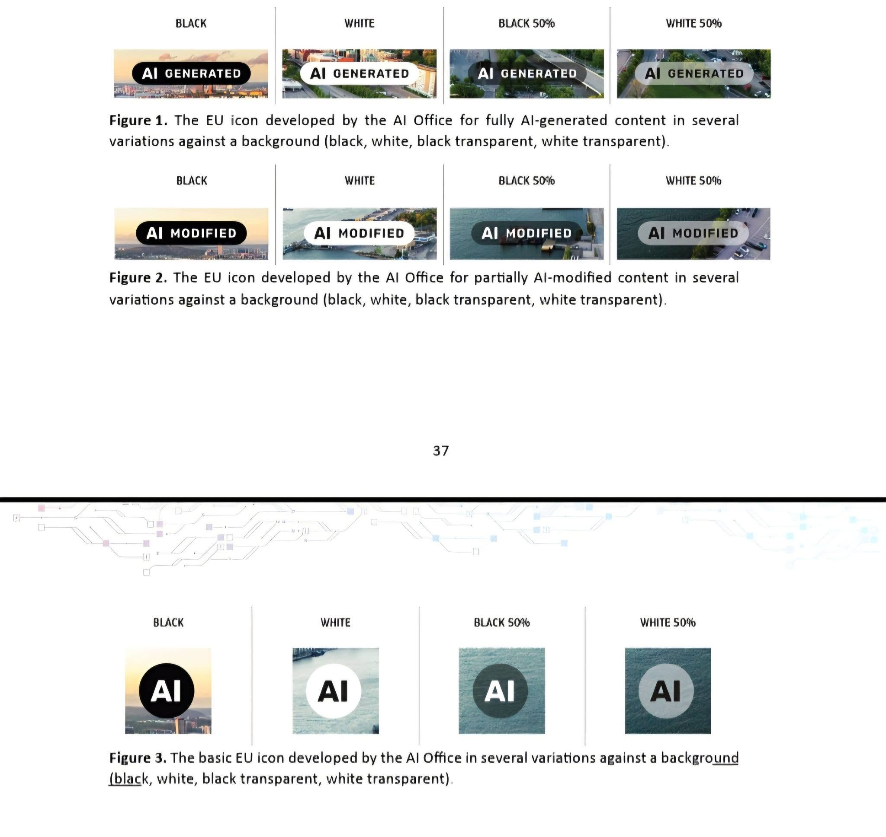

Jak správně označovat AI generovaný obsah? Nový kodex Evropské komise a co z něj vyplývá
Následující text byl spoluvytvářen a na Blog nasazen pomocí AI nástroje Google Antigravity. Za jeho správnost nesu jako autor/editor plnou odpovědnost.
Rozmach generativní umělé inteligence s sebou přináší revoluci v tvorbě obsahu, ale také nová rizika spojená s šířením dezinformací a ztrátou důvěry. Evropská komise proto nedávno (10. června 2026) zveřejnila finální Kodex správné praxe pro označování a označování obsahu generovaného AI (Code of Practice on the marking and labelling of AI-generated content).
Tento dokument slouží jako klíčové vodítko pro splnění povinností transparentnosti podle článku 50 evropského nařízení o umělé inteligenci (AI Act), jehož plná účinnost v této oblasti nastává již 2. srpna 2026. Pojďme se podívat na to, co tento kodex přináší pro praxi, koho se týká a jak se na nová pravidla připravit.
Pro koho pravidla platí?
Kodex rozlišuje dvě hlavní role v ekosystému umělé inteligence:
- Vývojáři (Providers): Pro ty, kteří systémy AI vyvíjejí, se kodex zaměřuje na technickou compliance. Musí zajistit, aby generovaný obsah (text, obrázky, video i audio) byl označen strojově čitelným způsobem (např. pomocí neviditelných vodoznaků, metadat či standardů jako C2PA).
- Zavádějící subjekty / Uživatelé (Deployers): Tedy pro nás všechny, kdo AI nástroje používáme v podnikání, marketingu či běžné komunikaci. Kodex dává jasná doporučení, jak označením informovat veřejnost, zejména pokud publikujeme syntetický obsah (deepfakes) nebo AI texty, které neprošly redakční kontrolou.
Jak a kde obsah označovat?
Pokud vytváříte syntetický obsah (text, obrázky, video i audio), Evropská komise připravila sadu bezplatných ikon, které můžete použít pro přehledné vizuální označení. Tyto ikony si můžete stáhnout přímo na webu Evropské komise pro digitální strategii.

Pro jednotlivé formáty platí následující doporučení:
- Text, video a audio: U těchto formátů je nejvhodnější hnem v úvodu nebo popisku jasně zmínit, že obsah byl generován pomocí AI nástrojů.
- Konkrétní nástroj: Určitě je vhodné uvést i to, jaký konkrétní nástroj byl použit (např. Google Gemini, ChatGPT, Midjourney apod.). Zvyšuje to důvěryhodnost u vašeho publika a přispívá k transparentnosti.
Co hrozí za nedodržení?
I když je samotný kodex dobrovolný, jeho ignorování s sebou nese dvě zásadní rizika:
- Zákonné pokuty: Plnění transparentnosti podle AI Actu (čl. 50) je zákonnou povinností. Přistoupení ke kodexu a jeho dodržování je pro firmy nejjednodušší cestou, jak před úřady prokázat, že tyto zákonné požadavky plní.
- Poškození reputace: Toto riziko je pro většinu z nás aktuální již dnes. Pokud se ukáže, že jste vydávali čistě AI generovaný obsah za vlastní autorské dílo bez upozornění, riskujete vážné poškození reputace a ztrátu důvěry u svých klientů či sledujících.
Závěr: Prevence je levnější
Bude v konečném důsledku mnohem méně nákladné a méně rizikové generovaný obsah transparentně označit, než se pokoušet hledat způsoby, jak detekční systémy obejít. Označování AI obsahu se rychle stává novým standardem profesionální komunikace.
Zavádíte ve vaší firmě AI nástroje a chcete mít jistotu, že vaše komunikace plně odpovídá požadavkům AI Actu a nového kodexu? Domluvte si s námi v IUSTORIA nezávaznou schůzku. Rádi zrevidujeme vaše nastavení a navrhneme vhodná doporučení.